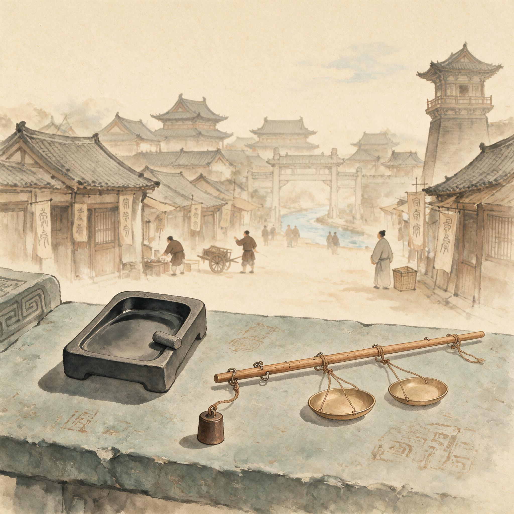

第 21 章
砚台与秤杆
他在县学东廊放下青布包时，天光还没把砖地上的露水完全化开。包解开，先取出的是一方砚台。端石，七寸长，四寸宽，砚额处雕了一枝极浅的梅，花苞小得要用指甲去探才能辨出五瓣。这是县学公物，登记在学田簿的杂项下，磨损了要报修，失火烧了要勾账。他用袖口擦了一遍砚面，又用铜勺从檐下积雨的小陶罐里舀了半勺水，滴在墨堂上。水珠子先凝着，再慢慢散开，渗入石纹。墨锭是徽州的松烟。他用拇指和中指捏住墨身，虎口夹着，贴着砚堂慢慢推。磨墨的动作很轻，从外向内，一圈压着一圈。起初能听见墨与石摩擦的涩声，像蚕吃桑叶，渐渐声音细下去，墨汁泛出青黑的光。
他在等告示的草稿。廊下比内堂冷，风从明伦堂后面的竹影里穿过来，带着一股湿泥土味。他并拢双膝，让后腰的汗慢慢被风吹干。昨晚的债主话还在耳壳里，一句一句，不响，却像耳壑里塞了几粒沙子，

砚台与秤杆：历史出版插图
AI 生成插图，非史实影像。
怎么转都磨得疼。他用力磨墨，想把沙子磨细。草稿是学谕昨天下学时搁在他那儿的，一张薄麻纸，上面涂改得很厉害。
他不用看内容，只看几个涂掉的字，就知道这份告示要发到各乡塾去，催缴春季的束脩折钱。县学公人催不得学生，只能催乡塾。乡塾又不在城里，要等里正上来缴账。一环拖一环，告示只是个姿态。不过，这个姿态必须写字好的人来做。所以落在他的头上。
他展开草稿，又取出一张半熟宣纸，裁成告示的尺寸。压纸用的是一块旧铜镇，铜色发暗，边角被袖口磨得圆润。镇纸压住纸头，他开始抄。第一笔下去，墨在纸上晕出一点极小的毛边。他停下来，提起笔，把笔尖在砚沿舔了舔，去掉两分墨，再落笔。这回字口干净。
他的工楷在县学里是数得上的。县学教授曾当众说过一句：“崔世宁这个字，去应考也不差。”这话传到户曹，被那边一个手分学来，当笑话讲：“应考？他过了春秋试，县里谁替他贴役？他那张户帖上栏头写的是‘吏户’。”崔世宁听见了，没接话。他正在勾对学田账，手里的朱笔没有停。红圈画完最后一个“实存”，他才抬头，看那手分一眼，眼光很平。此刻笔在纸上走。
告示开头是“县学谕示诸乡塾”：字要大，划要直，“示”字中间两横排得匀停，不能挤作一团。他写“示”字时想起自己第一次抄告示，写坏过三张纸，被押司罚去扫了三天学厨。那时他十七岁，还不懂什么叫“吏户”。只知道爹托了人，把他塞进县衙做贴司，图的是免差役、每月有口粮。爹在城隍庙前摆字摊，替人写追荐疏文。爹说，同样是动笔，穿公服的总比坐庙门口的强。他写了半张告示，廊下有脚步声。两个生员从东首月洞门进来，一前一后，袍角扫着地。走在前面那个束着青竹冠，腰侧挂一块玉，走路时玉碰着衣裳内衬，发出很轻的笃笃声。经过他背后时，那生员停了一下。“这字倒是干净。”
另一个生员笑了一声：“学里的纸笔，他天天用，能不干净吗？”
他们说的是他，但没对他说话。两人的脚一阵风似地过去了，留下几句话。崔世宁的手没有颤。他正在写“课”字，言旁一点，果字一横，最后两笔撇捺收得极稳。写完了，他才感到后颈有些僵。
他自认为是读书人的边缘。父亲也自认为是读书人的边缘。但边缘和里面到底不同。县学里的人，哪怕考不上发解试，至少还能在簿子上落一个“生员”。而他的名字落在吏簿上。吏簿用青纸，生员簿用白纸。这两种纸的颜色，他闭着眼都能摸出来，白的滑些，青的糙些，上面有麦秸屑。
这就构成了两种位置。坐在明伦堂里读书的人拿的是白纸；站在廊下抄写告示的人拿的是青纸。同一种笔墨，落在不同的簿籍上，便有了两种截然不同的命运。
他抄告示时离明伦堂只有一墙之隔，听见里面讲经的声音，断断续续的，像隔着一层水。有时他会故意把某个字写慢些，好让耳朵多留在那声音里一刻。但更多的时候，他知道那声音不属于他。
告示抄完。他检查两遍，确认没有错漏，折成三折，用麻线扎好，搁在学谕案上。然后他去井边洗手。
井栏是青石，绳槽里积着绿苔。他打上半桶水，把指缝间的墨迹搓掉。水凉得刺骨，但墨是松烟，好洗，不像市面上的炭黑，会渗进指甲缝，三天洗不净。洗手的当口，他看见自己袖口内侧有一道淡淡的灰印。
是昨晚在城西钱大户家墙外蹭的，墙灰混着尘土，一擦就往布里钻。他想不起什么时候蹭的。虱子咬了半夜，他半睡半醒，耳边还是那口话：“崔帐，三贯，腊八前。”腊八已经过去，债还在。他把袖子卷起来，再翻下来，遮住灰印。湿手在公服下摆擦干，指节上还留着一丝墨气，闻着有淡淡的松香味。
从县学侧门出去，是一条窄巷。巷东头住着一家做纸伞的，西头是米市的入口。空气忽然变了，松香味没了，换成熟米糠、潮木柴和牲畜粪混在一起的气味。他夹着青布包，走进米市。
没有过渡。上一刻他还在井边看自己的手，这一刻秤杆已经压在米袋上。先是左肩的布包带子滑下来，接着一个卖米的后生把半袋米送到他面前。后生额角暴着青筋，是跑过来的，说那边有人闹价，要官中的人去校一校。
崔世宁把布包搁在米斗贩的矮桌上，取出铜秤。这杆秤从头到尾二尺四寸，比一般行商用的长。秤杆是黄铜，细而韧，上面嵌着十六两制的秤星。星是银丝钉的，有些已经发黑。秤钩上挂着一小块铁，用来平衡。官颁的称，每年孟夏由主簿衙发到市场，再交他这样的贴司统一校准。秤上刻着几行字，刻得浅，笔画间填过黑漆，已被掌汗磨去大半。他认得出那几行字的位置：“权度，平准，官样。”他不用看，也知道那儿有字。
买主是个绸缎行的伙计，要称一石糯米。卖主是城外北村的米贩，说这一石米打村里来，路上遇雨，潮了半升，不能按原数算。伙计不信，说路上遇雨是你家事，我要的是足石。两人就在席棚下吵起来。
崔世宁走到两袋米前面，先把官秤挂在架子上，再从公褡裢里取出一只木盒。木盒里是一副铁斗，十合为一升，十升为一斗。斗上有县衙的火烙印，早被米糠磨得只剩半个字。
他先校斗。把米倒进官斗里，用一根刮板沿斗面刮平。刮板一过，多余的米落回袋口，有几粒跳到他鞋面上。他弯腰捡起来，扔回袋里。
官斗差半合。这是常事。铁斗做出来时本有公差，县府火印盖在“官样”上，不等于一丝不差。以前有个主簿发起过重校，把一个铁匠叫来问，铁匠当场把斗翻过来说，官家给的营例是每斗允差三撮，小的一直照着打。主簿没再说什么。
制度文本上的“官样”是一回事，落在铁水里冷却之后又是一回事。中间隔着铁匠的手艺、木板的伸缩、米贩的湿气，还有无数次日晒夜露。他就是那个把“官样”重新校准到现实中的人。用什么校准？用眼睛，用手指，用刮板的斜度。这是他和制度之间最真实的距离。
崔世宁把手掌按在斗沿上，顿了两下，让米粒沉实。再刮平，这一斗不多不少。
他把斗里的米倒回袋里，接着拿秤称。秤钩挂住袋口，左手提着纽绳，右手慢慢推砣。铜秤的臂杆有细微的曲度，用久了会偏。他去年用自己攒的二十文钱买了一小包铅砂，熔了，在秤杆尾部做了个极小的补重。这补重不合法，但校对出来的数字反而更接近官样。他从不告诉人。
砣停住了。他把手指按在砣绳旁，屏着气看了一眼准星。秤杆微微向下垂，差了半两。
卖米的急了，说自己这袋米是上等，不该差。崔世宁没接话，把秤砣又轻轻推了一线。这一线几乎不可见，秤杆抬平了。绸缎行的伙计盯着秤看，终于点头。
他从伙计手里接了牙钱，二十文。铜钱很小，旧的，上面结着米糠。他手指一捻，糠屑落在袖口里。袖口本有昨夜蹭的墙灰，现在加上黄白的糠粉，像在袖口绣了一道边。他把钱放进内袋，内袋上缘已被汗浸软，边缘毛了。
这一切很快。没人知道他在“推砣”的那一线里放了什么。官秤有误差，误差是明的；他的手指有偏向，偏向是暗的。暗的那一线，正好是二十文钱。秤落在公平处，人情落在他袋里。
这很薄，薄得像那层刮板下的米糠，风一吹就散，可没有这层东西，他今天就没有理由站在这里。
他回到矮桌前，包袱解了一半，看见县学的告示草稿还压在最上面。纸角沾了一点米糠。他伸手把糠弹掉，纸角下露出一行字：“仰各乡塾如期折纳，毋得迟延。”
他忽然觉得这行字和自己刚才做的事摆在一起，有些刺眼。但他随即把纸折好，塞回布包。
市场里的声音重新涌上来：讨价、喝价、米斛碰木板的闷响，一个老妇人追鸡，鸡羽毛飞起来，落进旁边卖腌菜的陶缸里，引起一阵骂。他听见了，没抬头。
他穿过半个米市，到了漕河边。有船靠岸。几个力工扛着米包从跳板上下来，竹杠压得弯弯的。岸边有人在斗量口粮。
一个穿着半旧蓝布衫的人拿着升子舀米，旁边站着一个仓吏模样的人，手里也拿着一杆秤。崔世宁认出那是自己熟的同行，姓姜，在常平仓管出纳。姜某的秤杆短些，粗些，砣上有铁锈。
他们相视点了个头。姜某正在说话，声音不高，但岸上风大，半句飘过来：“……你们这些口粮户，半饥不饱的，还嫌潮？这个月不折，下个月折，一样得领。”那舀米的手停了一下。
崔世宁没听见回话，只看见那蓝布衫的人把升子慢慢放回米板上，指节绷着。他低头看自己的手。手上没有升子，没有刮板，只有指甲缝里还藏着纸灰，是烧账尾时落进去的。
这双手什么都能做。能写告示，能校官秤，能放了一线让秤杆抬平。它做的时候，心里清楚，又不完全清楚。这就是胥吏的位置。
不是官员，不必为政策的后果负上名字；也不是百姓，不能把一切推给上面的命令。他们站在中间，用竹升、铜秤、墨笔做事。每一件都很小，小到没有人记得，可每一件都留下了痕迹：纸灰落在指甲里，米糠嵌在袖口里，铜腥味渗进掌心纹路里。朝代换了，案子销了，户帖撕了，这些痕迹却一直在。
崔世宁往县衙走。过了州桥，天已经暗下来。桥下的汴渠水被风吹皱，水面漂着草屑和半张烂纸。远处城楼上的更鼓还没响，属于昼与夜之间的那段时间，最静。
他喜欢走这一段。两边铺子还没收市，青布幌子垂着，灯还没点上。他的脚步经过卖纸的铺子，又经过卖秤的铺子。卖秤的铺门前挂着一排杆秤，大的百余斤，小的称金银，铜星在渐暗的天光里像许多闭着的眼睛。
快到衙前街时，他拐进一条小巷。巷底是官设的斗秤局库，三间窄屋，门板上有铁链，西北角那间窗户纸破了一块。
他打开第三间小屋，把铜秤、木斗和包袱放回架上。这是他的“局房”，一张榆木桌，两把椅子，墙上挂着一本烂了角的册子，记着每日校秤的数目。他点了一盏油灯，翻开册子，磨了一点残墨，记账。“米糯，一石，平，秤头钱二十。”
写完这行，他又补了一行：“告示一道，束脩折纳。”
两行字并排在一起，都是工楷，一点不差。墨是县学顺来的一点徽墨，纸是日常使的麻纸。他看到“秤头钱二十”这几个字，笔尖在纸面上停了很久。不能说羞耻。羞耻这个词太重，他担不起。
他只觉得那行字比“告示”那行略重，像墨蘸多了一点。油灯光一跳，两个字的影子在墙上分开了。
一个身子，两个影子。左边是告示，右边是秤头钱。左边那行清白，右边那行却拖着一条尾巴。两根尾巴绞在一起，绞成白天的那一截生活。
他很想写点什么别的，写一句诗，一行字，哪怕只是把“崔世宁”三个字写一遍。这名是父亲起的，有“世”有“宁”。可他从没在县学的生员簿上写成过。他只在吏簿、户籍、轮差名册、局房账本上写过这三个字，写得最多的是在账尾，签一个“吏崔世宁”。那个“吏”字写得极小，往往挤在栏格里，像躲在“崔”字的身后。
正想着，门外有脚步声。是县学斋仆来拿告示草稿，说学谕今晚要再看一遍。崔世宁从布包里取出草稿，递过去。那斋仆六十来岁，背有些驼，看了一眼他的脸，没说话。
临出门，老斋仆回头说：“崔贴司，明日志文会的香要早些领，库房辰时开门，晚了就没了。”崔世宁“嗯”了一声。老斋仆走了，门轴吱地一响，外边不远处有个妇人喊：“大郎，回来吃饭。”那声音穿过巷子，像从另一个世界里伸出来的手，搭在人肩上。
他重新坐下。桌上两样东西：一方砚台，一杆秤杆。砚台是石，秤杆是铜。石凉的，铜也凉的。油灯把两者照成两截阴影，砚的影矮而方，秤的影长而圆。
他看了半天，想起父亲。父亲到死都以为儿子在县衙里“做文章”。那年春天，父亲拿着他抄的告示，在城隍庙前给邻人看：“看看，我家世宁的字，进了告示。”邻人识字的少，只听父亲念。念到末尾没有他的名字，没人问。父亲也没说。他后来一直没解释。告示上落款是县学，没有抄写者的位置。
父亲不知道，他儿子每天换两次位置。早晨是读书人的边缘，上午是市井的秤手。两个位置都要他，两个位置都不算他的。
这种双重性带来了弹性。县学叫得动他，市场也叫得动他；催赋税时他是吏，校斗秤时他是官中的人；
生员缺纸缺墨时他张罗，米贩差个半合他也担待。一套身子，两套用度，上面的官员不必多雇两个人，底下的人也不必多跑两趟衙门。效率，就从这种身份的模糊里挤了出来。
但弹性也有重量。它压在一个人的后颈、耳壳、指甲缝里。他发现自己渐渐分不清哪个动作是真的。磨墨时的耐心，和推砣时的耐心，是同一个耐心。写“示”字时的那口气，和放那一线让秤杆抬平时的那口气，是同一口气。他把两样东西都做得太好，好到两边都舍不得放他走。
这正是制度的机巧之处。朝廷设立官秤，是为了在市场里放一个“公”的尺度；县学设立告示，是为了在乡野维持一个“文”的尺度。两个尺度都需要人在中间守着，可朝廷又不给这些人一个干净的身份。把他们变成官，太贵；把他们留在民间，又太散。
于是便有了胥吏：一种制度的中间态，一种必要之恶。他们不是被允许存在的，而是被需要存在着。
需要他们，又瞧不上他们。用他们，又防着他们。这样的安排，既不是昏庸，也不是英明，而是一种极其实际的治理算术。
县衙的花名册上，他的格子里写着“贴司”，下面一行小注：“兼学务、权量。”就是这五个字，把他的白天切成两半。至于夜里的账本上，那二十文钱记在哪里，没有人管，只有他知道。他拿起砚台，想写点什么。墨已经干了，砚池里有一圈青黑印子。他握着那块徽墨，没有磨。最后侧头吹了一下砚面的灰，灰被吹开，露出砚额上那枝梅。梅很浅，像刻在石头的记忆里，不凑近看几乎忘了。他手指在梅上停了一瞬，又缩回来。
然后他放下砚台，拿起秤杆。从腰里取出一块软布，对着秤杆慢慢地擦。布是旧的，边缘卷起。他先擦钩，再擦纽绳，然后一寸一寸擦秤星。那些银丝刻的星，被擦过的地方浮起极微弱的亮，像夜里的旧米粒。有些星永远黑了，嵌着陈年油垢。他擦得很仔细，不放过任何一段。铜腥味透出来，混着米糠的气息。有人会问，为什么一个能写工楷的人，要天天擦一杆秤。没有人问过他。他也不问自己。问清楚了，明天的营生还怎样做。他擦了很长时间。
他在局房门外又站了一会儿。铜锁的凉意还留在指腹上，像刚才擦过秤杆时留在布上的那种凉，只是更硬，更窄。巷子很黑，风从破窗纸那里钻进来，一口一口地扑在颈后。他没有点灯，也没有回头去摸那扇门板。
白天在米市校完最后一杆秤时，有个卖粮的老汉把他的手抓过去，按在秤杆上，说：“官中这一按，我们两下都认。”老汉手心粗得像麻石，指甲里嵌着陈年米浆。崔世宁当时没说话，只把秤星对准了给他看。
老百姓叫“官中”，生员背过身去不叫他，县衙签押房里偶尔叫他“崔贴司”。同一个人，三种叫法，像一杆秤上三根不同的纽绳，提哪一根，就称出哪一种分量。他慢慢把布包换到肩上，砚台在包里轻轻磕了一下肩胛骨，不响，但有那样一下。
石头的重量很具体，比铜秤重，又比铜秤凉得深。他想起父亲那方砚，比他这方小多了，右角磕掉一块，磨墨时手指总贴着缺口。父亲从不让他碰，说“你写你的，我供你”。后来他进了县衙，父亲才把砚递给他看，说这是当年在庙门口替人写疏文攒下的第一件值钱物事。
崔世宁只摸了一下，没要，说县学有公砚。其实他是嫌那缺口破。现在想起来，那缺口也许并不破，只是父亲舍不得换。父亲死后，这方砚不知是随棺下了，还是被邻人收去抵了纸墨账。他从没问过。人死之后，物事去向无人记账，像许多年间的许多账目，末尾都空着一竖。
巷子尽头连接的是一条小横街。他走到横街口时，听见更鼓迟了一下才落。鼓点很稀，像敲鼓人也不愿使力。更声一住，远处陡然传来马蹄。马蹄声从北边来，过了衙前街，又向西折，像是驿马往州里送信的。铁掌击在石板上，一阵比一阵急，在夜里格外清楚。崔世宁往墙根又靠了靠。
绍兴三十一年的秋天，这样的马蹄比往岁多。邸报在签押房的烛火下被人念得一截一截，金主完颜亮撕毁和约、发兵南下的消息像井水泛浑，衙门里谁都知道，谁也不愿明说。秦桧已经死了六年，朝上没有人再能用“终身宰相”四个字把和议一直压着；
主战的、主守的、观望的、借机作乱的，各色奏章全涌进都堂，落到州县，便成了一层层加急的转帖：催粮草，催差夫，催驿马，催弓手。崔世宁只是贴司，不管签押房里的商议，但那些转帖最终会变成他案头的数目。
他要校的官秤多了，要抄的告示密了，要记的账也细了。昨日一整天，他校了九次米，三次盐袋，一次麻油，另有两家炭铺的秤因铜星磨平说不清斤两，被他用官秤重新走了码。写到后来，他的右腕发酸，告示草稿上的字有些毛。学谕看了没骂，只说：“金兵打到哪了，你的笔先乱不得。”他应了一声，回来把笔尖重新舔过。
他很清楚，那些马蹄声不会直接到他耳边。战事再紧，他仍然要在天光初亮时赶到县学东廊，磨墨，展开草稿，写“仰各乡塾如期折纳”。仍然要在上午穿过窄巷，把袖口伸进米市的糠尘里。
国家破边之急，传到吏人这里，并不立刻变成忠义，而是变成更多需要补重的秤、更多催缴的簿册。今天下午，他在米市校完一石糯米后，那个绸缎行伙计多看了他一眼，说：“官中，这阵子都靠你们。”他半真半假地应了一声，把二十文钱收进袋里时，手指先被铜钱上的米糠扎了一下。回到局房记账，他才意识到“官中”这两个字像一枚薄薄的铜片，正面是县衙的火烙印，背面是他私自补的那一小粒铅。正面让人信任，背面让他活命。两面合起来，才是这杆官秤的真实分量。
这层分量白天看不见，夜里也说不清。它不写在花名册格子里，也不落在学田簿杂项下。它只在他从州桥走回衙舍的那段路上，偶尔从肩胛骨下面泛上来，仿佛白日里扛过的每一袋米、抄过的每一道告示，都在那里积着。
他想，官和民之间原不是空的。中间填满了他们这类人的手：会磨墨的手，会推砣的手，会从斗口刮平最后一粒米的手。朝廷从没有正式承认过这些手。可若没有这些手，县学的砚台不会润，市场的斗秤不会平，漕粮的数目不会在一夜之间从各乡汇总到签押房。他们是被需要却不必被看见的一层。需要他们的时候，叫他们官中、贴司、吏户；不用的时候，便只说“胥吏”二字，像说一样好用的旧物，扔在库房角落也不心疼。
他今天第一次想到秦桧。不是想到这个人的好恶，而是想到，连秦桧那样把和议做成终身宰相的人，死了之后，战和还得重新翻搅；而一个贴司每天校秤放线，最多只能让一袋米在眼前多停留片刻。这种对比很荒诞，也很真实。他站在横街口，马蹄声已经远得只剩下一点余响。
他忽然觉得，自己这双手与朝堂之间，隔着的不是官品，不是科第，而是一整套把“公事”不断往下匀摊的阶梯。梯子越往下，事情越具体，身份越模糊。到了他这一级，便只剩下砚台和秤杆，一小方石头，一截黄铜，每天逼他变换手指的力道。他不能变。变了，砚台会落下丑字，秤杆会失衡，袖口里那粒米糠会滚到更深处去。
他抬眼望了望天。没有月亮，天是青灰色的，被两侧屋脊裁成很窄的一条。明天，或许会更早地起风，更早地有驿马来去。他还得起来，汲水，磨墨，铺纸。还得到米市去听那些人吵，去看米粒落回袋口的那几粒。还得记两行字。他想，那些事情不会因为北边来敌就减少一分，只会更密。因为越是乱时，越要有人站到“公”的那一方去，哪怕那个“公”只是一杆旧铜秤。
指头隔着布，仍能感到铜杆上那些微小的凹陷——是这些年来，无数只手抓过、掐过、摩过的地方。有他自己的，也有许多不知道姓名的人。秤杆上的官颁刻字已经被磨得只剩浅痕。他摸到那几笔残画，像是摸到许多只手叠在一起的温度。
夜彻底深了。门外巷子的灯早已灭。他吹熄油灯，把秤杆放回架上，砚台放进布包。黑暗里，两样东西分别归位。他合上局房的门，用铜锁锁好。锁簧喀的一响，又落下。走出去几步，他回头。什么也看不见。只有袖口里那粒米糠还在，贴着手腕。他抖了一下袖子，一颗小东西落在地上，没有声音。
可他心里知道，那粒米糠还会回来。也许是明天，也许是后天，只要他还得去米市，只要他还得用那杆秤，袖口就永远不可能真正干净。这就是他的位置。不是清白，也不是污浊，而是站在两者之间的一层薄薄的阴影里。这层阴影保护着他，让他免于彻底的坠落；也笼罩着他，让他永远无法走到光里去。他接受了它，就像接受自己袖口上的那道边。不是不想洗，而是洗了也白洗。明天的营生还在等着。
他仍旧要先去县学，再赶去米市。仍旧要面对生员白色的袍角，米贩青筋突起的额角。仍旧要在告示和秤杆之间，把自己分成两半。也许哪天分累了，就合起来。只是现在，他还分着。崔世宁走出那条窄巷，转入通衢。夜风从州桥方向吹来，把他公服的下摆掀起一角。他伸手按住，触到内袋里的二十文钱。钱是凉的，带着铜腥气。他没有再掏出来看，只是用拇指在外头按了按。钱在，日子就在。这就是一个贴司的全部道理。至于这道理能不能长久，能不能保住自己夜里那片刻的安宁，那是另一本账，记在心里，不落在纸上。他现在能做的，只是把步子走稳，走回那个既是家又不是家的地方。